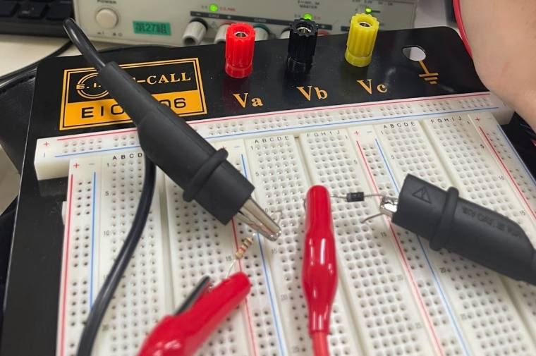
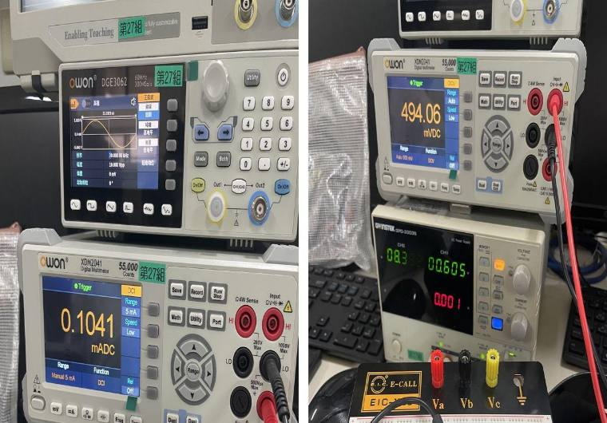
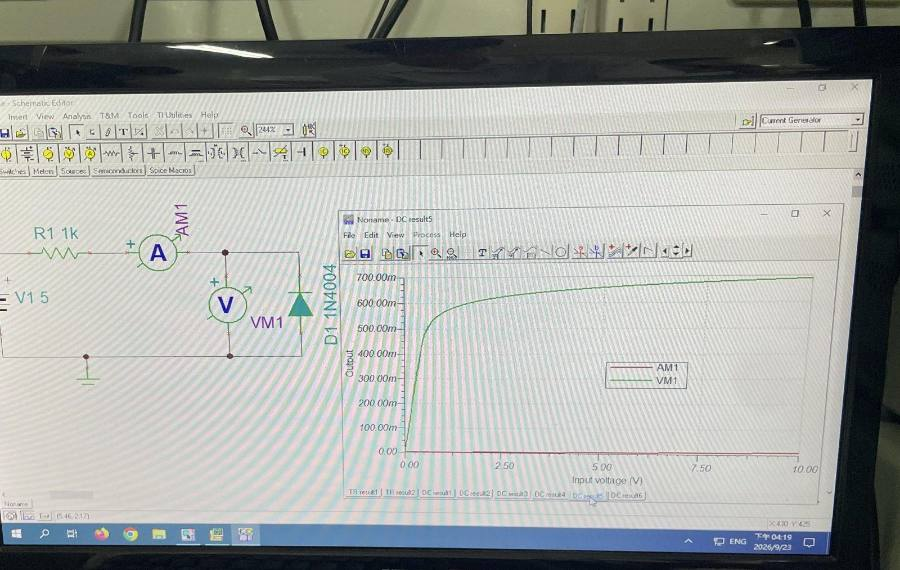
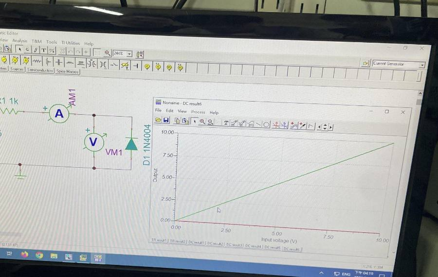

實習講義 第三章Electronics Lab · Diode Characteristics
二極體特性：單向導電與 V-I 曲線
二極體是一扇有門檻的單向旋轉門：順著推，過了 0.6 V 電流就指數暴衝；反著推，30 V 也幾乎推不動。這一頁用你 9/23 量到的數據一路講完。
實習講義 第三章Story mode · 先看這段，再往下讀
18 個畫面看懂二極體THE STORY IN 18 SCENES
點畫面（或往左滑）前進，點左邊四分之一退回；也可以按「自動播放」。
實習講義 第三章How to read this page
這一頁怎麼讀PAGE MAP
講義 11 頁：p.2–4 原理、p.5–6 課堂實驗、p.7–11 PSpice。
p.2–3二極體構造、順偏與反偏p.4V-I 特性曲線、二極體方程式、切入電壓p.5–6🔬 順偏／反偏靜態特性 → 📈 你的數據p.7–11💻 PSpice DC Sweep
講義勘誤／請確認：
- p.4「η 為常數，矽二極體 = 2，鍺二極體 = 1」是較舊課本的取法；實際元件 η 在 1～2 之間。你這顆 1N4004 擬合出 η ≈ 1.78，接近講義的 2。
- p.7 PSpice 範例用 R4 = 100 Ω、D1N4002，跟課堂的 1 kΩ、1N4004 不同；p.8 截圖又是 R1 = 5k、D1N4148、掃 −10～10 V，只是操作示範。
實習講義 第三章p.2–3 · Forward & reverse bias
單向導電：順偏與反偏FORWARD & REVERSE BIAS
P 型接 N 型就是一顆二極體。接正是（通），接正是（擋）。
順偏：I = (V − VD) / R 反偏：I ≈ 0，VD ≈ V
從接法到電流
- 陽極 A（P）接正、陰極 K（N，色環端）接負 ⟹ 順偏
順著三角形的方向推。講義圖 3.4(a)。
- KVL：V = I·R + VD ⟹ I = (V − VD)/R
導通後 VD 只有 0.5～0.7 V，其餘電壓都在上。
- 反過來接 ⟹ 反偏，I ≈ 0
旋轉門卡住，只剩極小的逆向飽和電流。講義圖 3.4(b)。
- I ≈ 0 ⟹ 電阻壓降 ≈ 0 ⟹ VD ≈ V
你的數據：Vi = 20 V 時 Vd = 19.997 V。
順偏 vs 反偏
- 電流
- —
- V_D
- —
判斷順偏／反偏
- 找色環（陰極）。
- 陽極電位比陰極高 → 順偏；反之反偏。
- 順偏：I = (V − 0.7)/R；反偏：I ≈ 0、VD ≈ V。
常見錯誤
- ✗ 反偏時二極體兩端沒電壓。✓ 電壓全部落在它身上。
- ✗ 不串電阻直接接電源。✓ 一導通電流就爆大，會燒掉。
🧠 觀念填充 · 原理（不用算，用選的）
實習講義 第三章p.4 · V-I characteristic
V-I 特性曲線與二極體方程式THE DIODE EQUATION
過了，電流隨電壓指數成長：每 ×10 只要多約 0.1 V。反偏只剩極小的。
I = IS(eV/ηVT − 1) VT = (273 + T°C)/11600 ≈ 26 mV Vr：矽 0.6 V、鍺 0.2 V
從公式看你的數據
- 順偏、V ≫ VT ⟹ I ≈ ISeV/ηVT
e 的次方很大，「−1」可以不管。
- 兩點相除：I2/I1 = e(V2 − V1)/ηVT
IS 消掉了，只剩 η。
- 電流 ×10 ⟹ ΔV = ηVT ln 10 = η × 59.6 mV
η = 2 時每 ×10 多 119 mV；η = 1 時 60 mV。
- 你的數據：0.1 → 1 mA 多 103 mV、1 → 10 mA 多 108 mV ⟹ η ≈ 1.78
7 個點擬合：η = 1.78、IS = 2.4 nA（含 0.3 Ω 串聯電阻，每點誤差 ≤ 3 mV）；不含串聯電阻則是 η = 1.80、IS = 2.8 nA。
- 反偏：e 項 → 0 ⟹ I → −IS（約 nA）
你量到的 0.001～0.003 mA 已經是電表最後一位。
調 η、溫度、IS，讓曲線穿過你的點
- V_T
- —
- 1 mA 時的 V
- —
- 每 ×10 多
- —
用兩個量測點算 η
- 挑兩點（電流差越多越好）。
- η = (V2 − V1) / (VT ln(I2/I1))。
- 結果應在 1～2 之間。
常見錯誤
- ✗ VT 代 26（沒換成 V）。✓ 0.026 V。
- ✗ 用 log 不用 ln。✓ 公式是自然對數；用 log 要乘 2.303。
- ✗ 反偏電流是 0。✓ 是 −IS，極小但不是 0。
🧠 觀念填充 · 特性曲線（不用算，用選的）
實習講義 第三章p.5–6 · Experiment（課堂）
🔬 實驗流程：順偏／反偏靜態特性LAB PROCEDURE
順偏：調 Vi 讓 A1 = 0.1～10 mA，記 Vi、Vd。反偏：Vi = 5～30 V，記 A1、Vd。
- 直流電源供應器0～30 V
- 三用電表DCA 量 A1、DCV 量 Vd
- 1N4004色環端＝陰極
- 電阻 1 kΩ限流
- 順偏接線
陽極接電阻端、陰極（色環）接地。電表切 DCA 串進去。
- 慢慢調 Vi
讓 A1 = 0.1、0.2、0.5、1、3、5、10 mA，記下 Vi。過了 0.6 V 電流衝很快，要很慢。
- 換 DCV 量 Vd
電表並在二極體兩端。
- 反偏
二極體反過來，Vi = 5、10、14.5、15、15.5、20、25、30 V，各量 A1、Vd。
實驗時最常出包的地方
- ✗ DCA 檔並在二極體上。✓ 等於短路，會燒電表保險絲。
- ✗ 順偏一口氣把電壓轉大。✓ 電流瞬間衝過 10 mA。
- ✗ 反偏讀到 0.00x mA 以為接錯。✓ 本來就幾乎沒電流，那是電表最後一位。
🧠 觀念填充 · 實驗操作（不用算，用選的）
實習講義 第三章Results · 9/23 結報
📈 結果：我的結報數據MY DATA
表格預設是你 9/23 結報的數字（1N4004、第 27 組），改了會存起來、圖跟著變；按「改回結報數據」還原。
順偏（左）與反偏（右）
我的順偏（表 1）
| 目標 A1 | Vi（V） | A1（mA） | Vd（V） | 擬合 Vd | (Vi − Vd)/A1（kΩ） |
|---|
我的反偏（表 2）
| 目標 Vi | A1（mA） | Vd（V） |
|---|
你的數據說了什麼：
- 指數：電流 ×100，電壓只多 0.21 V；擬合出 η = 1.78、IS = 2.4 nA，每點誤差 ≤ 3 mV。
- 切入電壓約 0.6 V：0.596 V 時剛好 1 mA，跟講義矽 0.6 V 一致。
- 反偏 ≈ 0：5～30 V 都在 0.000～0.003 mA，是電表解析度極限；Vd ≈ Vi。
- 電阻反推約 1.07～1.08 kΩ（右邊那欄）：電阻誤差加上電流表內阻。10 mA 那點算出 0.975 kΩ 比較怪，可能那時電表換了檔位（請確認）。
📷 實驗照片（結報）




實習講義 第三章p.7–11 · PSpice（回家作業）
💻 PSpice：DC Sweep 掃出 V-I 曲線PSPICE DC SWEEP
講義 p.7：V1 → 100 Ω → D1N4002，V1 從 0 掃到 10 V（每次 0.01 V）。
- New Simulation Profile → DC Sweep
Voltage source、Name = V1、Linear，Start 0、End 10、Increment 0.01。
- Run，Add Trace → I(D1)
Y 軸放二極體電流。
- Plot → Axis Settings → Axis Variable → V(D1:1)
X 軸改成二極體陽極電壓，就是 V-I 曲線。
應該跑出來長這樣（模擬 D1N4002）
實習講義 第三章Glossary · 中英對照
名詞中英對照表GLOSSARY
中文English
符號二極體diode
D陽極／陰極anode / cathode
A / K順偏／反偏forward / reverse bias
—V-I 特性曲線V-I characteristic
—逆向飽和電流reverse saturation current
IS熱電壓thermal voltage
VT切入電壓cut-in voltage
Vr崩潰電壓breakdown voltage
VZK限流電阻current-limiting resistor
R靜態特性static characteristic
—直流掃描DC sweep
PSpice實習講義 第三章自我檢查